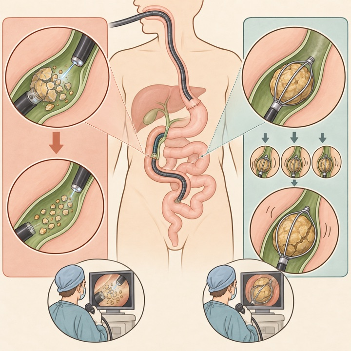
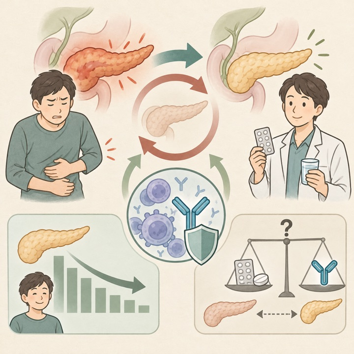
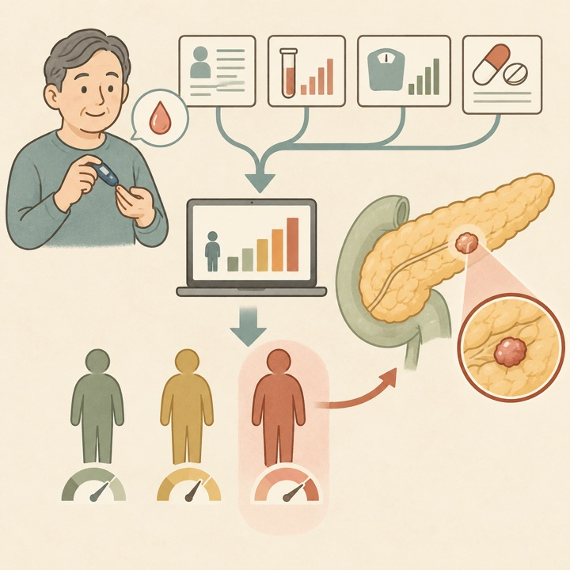
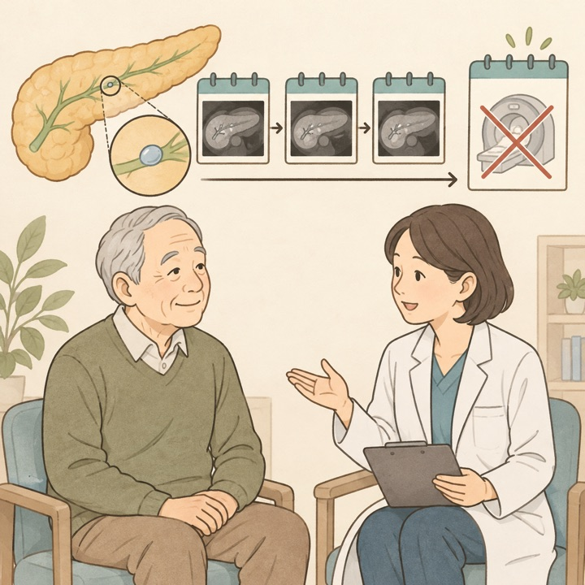
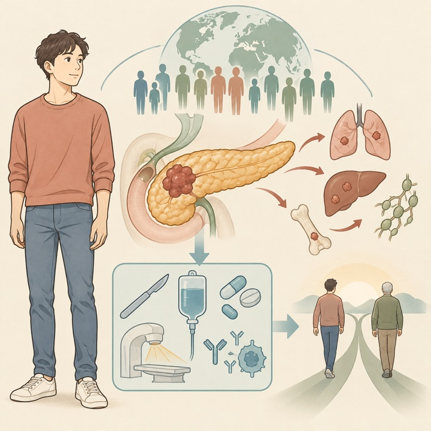
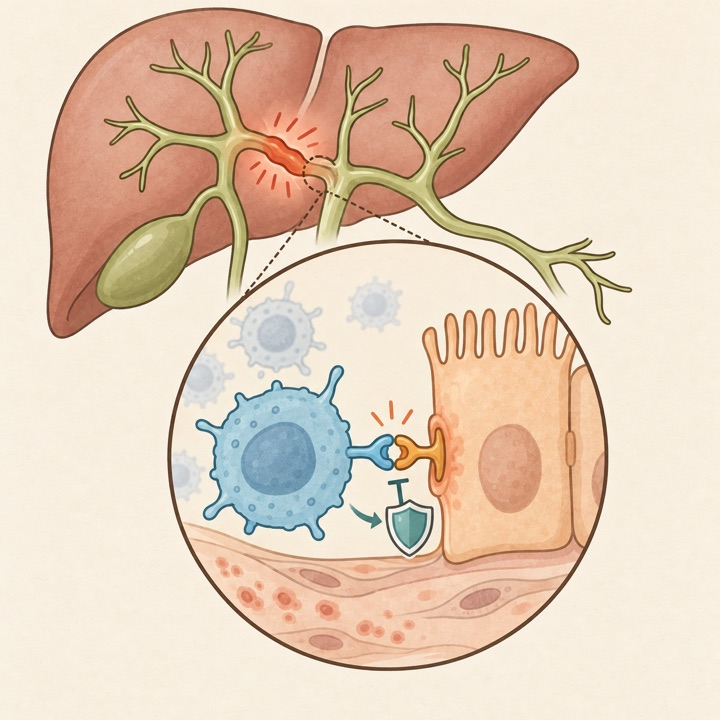
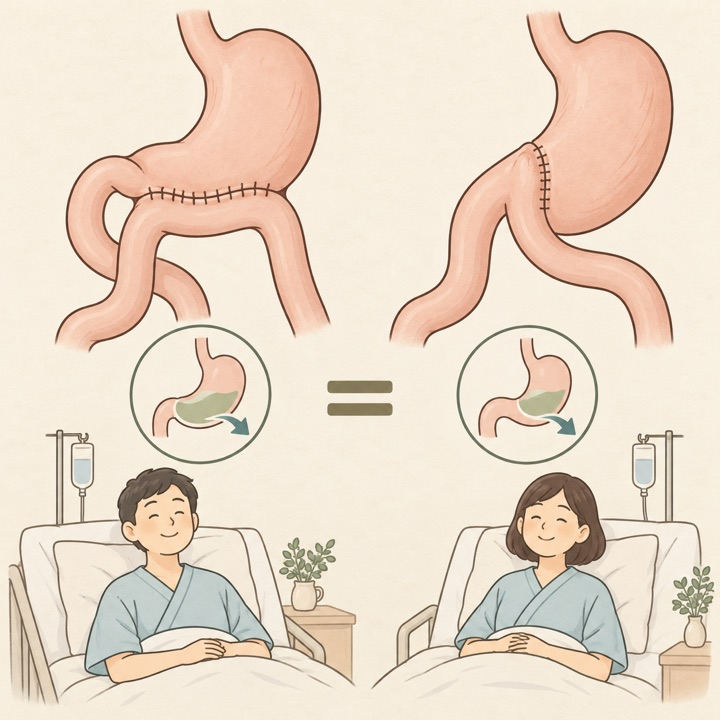
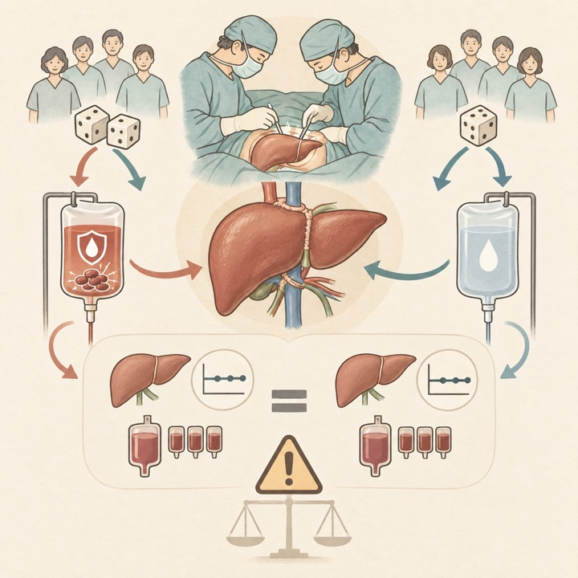

STOP-DM：糖尿病集団から膵癌の短期高リスク層を抽出
Gut / Q1436,304-person validation
日常診療の11変数で6か月リスクを予測し、外部検証AUC 0.86。上位5%に発症例の約半数を集約しました。
Tokai University Pancreatobiliary Group
This Week's Pancreatobiliary Research Highlights
臨床的重要性、研究デザイン、診療への応用可能性を基準に4報を選定しました。IFとJCR quartileは2025年値（2026年公表、判明した最良カテゴリ）を使用し、確実に判定できない場合はQ4としています。
日常診療の11変数で6か月リスクを予測し、外部検証AUC 0.86。上位5%に発症例の約半数を集約しました。
膵頭十二指腸切除158例で側々吻合と端側吻合を比較し、胃排出遅延、栄養、90日QOLに差を認めませんでした。
長期ステロイド維持の利益を支持する一方、再燃時rituximabの比較優越性は低確実性にとどまります。
大結石104例で機械的砕石firstの62%を上回り、複数回治療も減少。前向き比較が次の課題です。
日本語: 胃切除後の再建腸管で乳頭へ到達できた大総胆管結石104例を、胆道鏡下砕石（POCL）first 39例と機械的砕石（ML）first 65例で比較しました。初回完全採石は95%対62%（リスク差33.3%）、最終採石例で2回以上を要した割合は5%対32%でした。有害事象に有意差はなく、調整後もPOCL-firstは初回完全採石と関連しました（調整RR 1.40）。ただし治療選択を含む後ろ向き研究であり、費用、手技時間、術者経験を含む前向き評価が必要です。
English: In postgastrectomy patients undergoing BE-ERCP, a POCL-first strategy was associated with 95% initial-session clearance versus 62% with ML-first and fewer repeat sessions, without a detected safety penalty.

日本語: 2件のRCTと35件のコホート、計5,742例を統合しました。維持療法は再燃リスクを低下させ（RR 0.58）、アジア集団では長期ステロイドが短期投与より有利でした（RR 0.46）。再燃部位は膵が71%で、男性、黄疸、糖尿病、IgG4高値、胆管・他臓器病変がリスク因子でした。再燃治療はrituximabが最良推定でしたが、ネットワーク比較の多くは低〜非常に低い確実性です。維持療法の利益は支持される一方、薬剤順位を確定する根拠ではありません。
English: Maintenance therapy reduced relapse risk, with longer glucocorticoid treatment appearing beneficial in Asian cohorts. Rituximab ranked favorably for relapse treatment, but comparative certainty was low.

日本語: 中国の糖尿病コホート330,767例で日常診療11変数を用いたrandom forest型STOP-DMを開発し、独立105,537例で外部検証しました。6か月膵癌予測AUCは導出0.88、内部0.89、外部0.86。上位5%高リスク群は検証集団の発症例59.37%と48.03%を捉え、最下位群の11.00倍、14.37倍のリスクでした。新規発症だけでなく長期糖尿病でも機能しましたが、中国集団の後ろ向きEHR研究であり、校正、偽陽性負担、画像検査につなぐ閾値を前向きに検証する必要があります。
English: STOP-DM used 11 routine variables to achieve external-validation AUC 0.86 at six months; the highest-risk 5% captured about half of incident cancers. Prospective implementation is still required.

日本語: 低リスク分枝型IPMN 392例を2,375人年追跡し、長期安定後の監視終了基準を外部適用しました。新規worrisome feature/high-risk stigmataは66例、HGD/癌は3例でしたが、4年以降に切除例や高異型度病変はありませんでした。基準適用で25.8%を監視終了でき、1,000人あたり298人年と79,316ユーロを削減し、高異型度病変の見逃しは0でした。ただしその上側95%限界は100人年あたり0.84で、単施設・イベント少数です。年齢、手術適応、併存疾患を含む共有意思決定が前提です。
English: Applying discontinuation criteria would release substantial surveillance resources without observed missed high-grade lesions, but the confidence bound and single-center design preclude declaring risk zero.

日本語: 15か国48研究、重複を除く推定695,936例を統合しました。若年発症膵癌は糖尿病が少ない一方（OR 0.39）、stage IVが多く（OR 1.18）、化学療法実施は約2倍（OR 2.04）でしたが、全生存は平均発症群と同等でした（HR 1.03）。より進行して発見されても積極治療で生存差が相殺される可能性を示します。全アウトカムのGRADE確実性は非常に低く、年齢閾値・重複・未調整交絡が大きいため、50歳未満の生殖細胞系列検査と公平な集学的治療を支持する仮説生成的所見です。
English: Early-onset disease presented at a more advanced stage and received more chemotherapy, yet overall survival was similar. Certainty was very low, so the apparent paradox should not be overinterpreted.

日本語: NOD.c3c4マウスの10・20・40週肝を空間transcriptomicsとscRNA-seqで解析し、炎症胆管周囲の細胞間通信としてT細胞CD226と胆管上皮NECTIN2を同定しました。NECTIN2 knockdownと抗CD226抗体はin vitro/マウスでT細胞活性化を抑え、ヒトPSC、PBC、アルコール関連肝疾患の摘出肝でも共局在を確認しました。標的候補として強い多段階検証ですが、ヒトでの因果性、PSC特異性、治療安全性は未確立で、臨床介入へ直結する段階ではありません。
English: Spatial and single-cell analyses identified a CD226–NECTIN2 T-cell–cholangiocyte interaction, functionally inhibited in models and detected in human diseased bile ducts. Clinical translation remains preliminary.

日本語: フランス2高症例数施設で膵頭十二指腸切除158例を術中1:1無作為化し、側々（SSGJ）と端側（ESGJ）胃空腸吻合を比較しました。胃排出遅延は38.0%対30.4%（RR 1.25、95%CI 0.81〜1.94、P=0.314）で有意差なし。膵液瘻、胆汁瘻、再介入、死亡、90日栄養指標とGIQLIも同等でした。SSGJの優越性を支持せず、両法を同等な選択肢とみなせますが、非盲検、2施設、一定の背景不均衡があり、細かな手技差への外挿には注意が必要です。
English: In 158 randomized patients, side-to-side gastrojejunostomy did not reduce delayed gastric emptying versus end-to-side reconstruction; other outcomes and 90-day quality of life were comparable.

日本語: 成人肝移植89例をTXA持続投与（10 mg/kg/時、門脈遮断解除まで）と生食placeboへ無作為化しました。早期移植肝機能不全は28%対13%で有意差に届かず（P=0.08）、術後1日ASTはTXA群で高値でした。輸血量、AKI、血栓塞栓、在院日数、費用、院内死亡、180日生存に差はありません。単施設・小規模で有害性確定には不足しますが、少なくともルーチンTXAによる移植肝機能・輸血量の利益は示されず、選択的使用を支持します。
English: Tranexamic acid did not improve early graft function, transfusion requirements, or other perioperative outcomes versus placebo. Routine administration should be approached cautiously.

ClinicalTrials.gov公式APIを2026年10月11日に検索し、10月5日〜11日に新規公開された直接関連研究11件と、診療・開発上重要な更新13件を選択しました。一般固形癌のみ、嚢胞性線維症、糖尿病、非胆膵領域のEUS、PBCなどは除外しています。JRCTは検索していません。
| 新規｜FGFR2胆管癌 | NCT07862998 既治療FGFR2融合・再構成胆管癌に対するpemigatinib 2026-10-07公開 / 第II相 / 72例 / Not yet recruiting。 |
|---|---|
| 新規｜進行PDAC | NCT07864571 一次GnP±L-glutamine 2026-10-08公開 / 第II相 / 200例 / Not yet recruiting。 |
| 新規｜小児肝切除 | NCT07867522 術後胆汁漏予防の肝外胆道ドレナージ 2026-10-09公開 / 12例 / Recruiting。 |
| 新規｜膵炎・膵液瘻 | NCT07862088 急性膵炎局所合併症・術後膵液瘻の管理と転帰 2026-10-07公開 / 観察研究 / 5,000例 / Recruiting。 |
| 新規｜1型AIP | NCT07862075 inebilizumab治療 2026-10-07公開 / 第IV相 / 50例 / Recruiting。 |
| 新規｜KRAS G12D PDAC | NCT07859085 GDC-7035＋mFOLFIRINOXまたはGnP等 2026-10-05公開 / 第I相 / 388例 / Not yet recruiting。 |
| 新規｜EUS疼痛治療 | NCT07865286 EUSガイド下対経皮的腹腔神経叢ブロック 2026-10-08公開 / 100例 / Not yet recruiting。 |
| 新規｜胆嚢摘出鎮痛 | NCT07865455 labetalol、硫酸Mg、lidocaineのopioid節減効果 2026-10-08公開 / 第IV相 / 90例 / Not yet recruiting。 |
| 新規｜肝移植免疫抑制 | NCT07862439 / BRITRE miRNA biomarkerに基づく免疫抑制薬減量 2026-10-07公開 / 第II相 / 180例 / Not yet recruiting。 |
| 新規｜生体肝移植 | NCT07863349 paired exchange後の身体活動・QOL 2026-10-07公開 / 68例 / Completed。 |
| 新規｜局所進行PDAC | NCT07867873 導入化学療法後の手術対MRI-guided SABR 2026-10-09公開 / 第III相 / 230例 / Not yet recruiting。 |
| 更新｜CLDN18.2 PDAC | NCT07066098 / G-HOPE-002 IBI343対placebo 2026-10-05更新 / 第III相 / 201例 / Recruiting。 |
| 更新｜BRCA-PDAC | NCT04548752 olaparib±pembrolizumab 2026-10-07更新 / 第II相 / 68例 / Active, not recruiting。 |
| 更新｜局所進行PDAC | NCT04172532 放射線治療＋peposertib 2026-10-07更新 / 第I相 / 92例 / Recruiting。 |
| 更新｜少数転移PDAC | NCT06593431 / EXPAND 局所療法追加の無作為化第III相 2026-10-06更新 / 80例 / Recruiting。 |
| 更新｜KRAS G12D PDAC | NCT07522073 化学療法±INCB161734 2026-10-08更新 / 第III相 / 588例 / Recruiting。 |
| 更新｜転移性PDAC | NCT07562152 atebimetinib＋GnP一次治療 2026-10-09更新 / 第III相 / 510例 / Recruiting。 |
| 更新｜PSC | NCT07341282 UC合併PSCに対するvancomycin 2026-10-09更新 / 第II相 / 14例 / Recruiting。 |
| 更新｜1型AIP | NCT06468709 高再燃リスク例の寛解維持戦略 2026-10-06更新 / 第IV相 / 86例 / Recruiting。 |
| 更新｜肝移植 | NCT07739914 / ALTERNATION everolimusによるCNI-free免疫抑制 2026-10-05更新 / 第III相 / 150例 / Recruiting。 |
| 更新｜機械灌流肝移植 | NCT07585890 欧州10,000例の転帰benchmark 2026-10-08更新 / 観察研究 / 10,000例 / Recruiting。 |
| 更新｜膵粘液性嚢胞 | NCT06320990 非切除例のtamoxifen化学予防 2026-10-08更新 / 第I相 / 15例 / Recruiting。 |
| 更新｜胆膵ステント | NCT04708288 ARCHIMEDES生分解性胆管・膵管ステント 2026-10-05更新 / 198例 / Recruiting。 |
| 更新｜膵切除 | NCT07831694 部分切除対膵全摘の術後転帰 2026-10-08更新 / 3,602例 / Completed。 |
PubMedの2026年10月5日〜11日EDATに加え、Nature Reviews Gastroenterology & Hepatology、The Lancet Gastroenterology & Hepatology、Gastroenterology、Gut、Clinical Gastroenterology and Hepatology、Annals of Surgery、Journal of Hepato-Biliary-Pancreatic Sciences、Gastrointestinal Endoscopy、Endoscopy、Surgical Endoscopy、Endoscopy International Open、VideoGIE、Clinical Endoscopy、Digestive Endoscopy、DEN Open、iGIEの公式最新掲載ページと、選定論文の公式出版社ページを直接確認しました。アクセス制限があるページは公式DOI解決先とPubMed索引を突合しました。IFは2025 Journal Impact Factorを優先し、quartileを確実に確認できない誌は依頼方針に従いQ4と表示しています。速報・ahead of printの情報は更新されることがあります。
2026年9月28日〜10月4日版
2026年9月21日〜9月27日版
2026年9月14日〜9月20日版
2026年9月9日〜9月15日版
2026年8月31日〜9月6日版
2026年8月24日〜8月30日版
2026年8月17日〜8月23日版
2026年8月10日〜8月16日版
2026年8月3日〜8月9日版
2026年7月27日〜8月2日版
2026年7月20日〜7月26日版
2026年7月13日〜7月19日版
2026年7月6日〜7月12日版
医療従事者向け情報： 本ページは医師・医学生・研究者向けの文献整理であり、患者向け広告、診療ガイドライン、個別の診断・治療助言ではありません。掲載内容は公開時点の情報に基づき、原著論文・最新ガイドライン・各施設の方針をご確認ください。